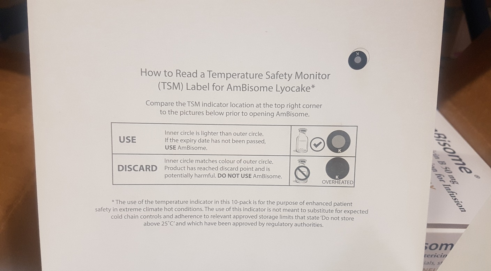

FR Information Amphotericine B
Information
Veuillez noter que le fabriquant Gilead, a commencé à fournir des boites contenant le produit DINJAMBL5V-AMPHOTERICIN B, 50 mg, avec des étiquettes TSM (Temperature Safety Monitor). Vous pourriez recevoir ce produit prochainement. L’étiquette TSM se trouve sur la surface interne du couvercle de la boîte en carton. Cette boite contenant elle-même 10 flacons de produit (voir les images ci-dessous).
 Le produit ne doit en aucun cas être traité différemment que précédemment. Il doit encore être stocké / transporté à une température inférieure à 25 ° C.
Le produit ne doit en aucun cas être traité différemment que précédemment. Il doit encore être stocké / transporté à une température inférieure à 25 ° C.
Le TSM est similaire au VVM (Vaccine Vials Monitor), qui est couramment utilisé par MSF, mais pas strictement identique à celui-ci.
Une étiquette TSM qui a viré (en cas d’élévation de température) permet d’ identifier un produit à ne pas utiliser.

Cependant, veuillez continuer à soumettre un rapport de rupture de température (avec les données Logtag disponibles) pour tout produit, DINJAMBL5V, ayant subi une exposition de température anormale (supérieure à 25 ° C, inférieure à 2 ° C).Les produits ayant connu une exposition de température anormale avec une étiquette TSM non déclenchée doivent encore être évalués au niveau du siège.